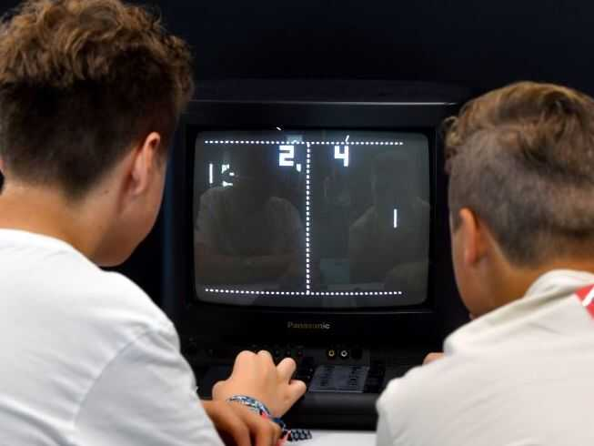

Computers and Games
Origin of Computers
The first digital electronic calculating machines were developed during World War II. The first semiconductor transistors in the late 1940s were followed by the silicon-based MOSFET (MOS transistor) and monolithic integrated circuit (IC) chip technologies in the late 1950s, leading to the microprocessor and the microcomputer revolution in the 1970s.
Origin of Games
The history of video games began in the 1950s and 1960s as computer scientists began designing simple games and simulations on minicomputers and mainframes. Spacewar! was developed by MIT student hobbyists in 1962 as one of the first such games on a video display.

First Computer Game
Spacewar!
The history of video games began in the 1950s and 1960s as computer scientists began designing simple games and simulations on minicomputers and mainframes. Spacewar! was developed by MIT student hobbyists in 1962 as one of the first such games on a video display.

First Mainstream Game
Pong
The first consumer video game hardware was released in the early 1970s. The first home video game console is the Magnavox Odyssey, and the first arcade video games are Computer Space and Pong.
Impact of Computer Games
Society and Games
Studies differ from the suggestions that gaming negatively influences society. The findings show that most gamers use the activity as a way of spending leisure time. It does not dictate how they live their lives. Although other studies show a linkage between games and moods, it is only for the short term. There is still research on the long-term effects of gaming. It is advisable to offer parental guidance to kids about gaming and what game to play.